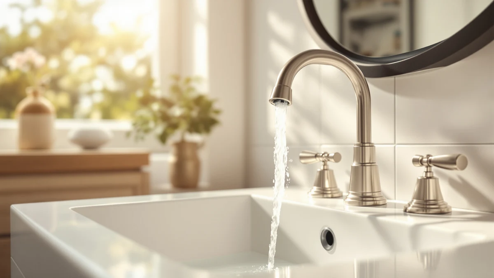

How to Clean and Shine Bathroom Faucets: Complete Guide (2026)
Prices and picks verified as of October 2026. Independent, reader-supported reviews.


Things to Know Before You Buy
- Most faucet dullness comes from hard water deposits and dried soap film, not worn finish, so it usually cleans off instead of requiring a replacement.
- White vinegar dissolves limescale on chrome and stainless steel, but it can etch brass, bronze, or gold-toned finishes if left on too long.
- Drying the faucet immediately after rinsing matters more than the cleaner you use, since lingering water droplets are what cause new spots.
- A soft-bristle toothbrush reaches the base and handle joints where grime collects and a cloth can't.
- The full routine costs under 15 dollars in supplies and takes about 30 minutes for one faucet.
Knowing how to clean and shine bathroom faucets saves you from replacing a fixture that only looks worn because of hard water buildup and old soap film. Most faucets dulled by cloudy spots and fingerprints come back to a near-new shine with a vinegar soak, a gentle scrub, and a thorough dry, and you won't need to replace a single part.
The method below works on chrome, brushed nickel, and stainless steel finishes, and it flags the one adjustment brass and bronze faucets need so the cleaner doesn't damage the coating. Set aside half an hour, gather the three supplies below, and you'll have a faucet that looks freshly installed by the time you're done.
What You'll Need
- Supplies: white vinegar, mild dish soap, and a few microfiber cloths to clean and shine the faucet
- Tools: a soft-bristle toothbrush and rubber bands or zip ties to hold soaked cloths in place
Step 1: Clear loose grime with soapy water
Fill a bowl with warm water and add a few drops of mild dish soap. Wipe down the spout, handle, base, and aerator with a soft cloth dipped in the solution to remove dust, toothpaste splatter, and everyday grime before you treat any mineral deposits underneath.
This first pass matters because dried soap film can mask how much of the dullness is actually hard water buildup. Skipping it is the most common reason people think they need harsher chemicals to clean and shine bathroom faucets than they actually do. Once the surface grime is gone, you'll see exactly where the vinegar soak in the next step needs to focus.
Step 2: Soak hard water spots with vinegar
Soak a few paper towels or a cloth in plain white vinegar and wrap them around the spout tip, the base, and any crusted ridges where limescale has built up. Secure the wrap with a rubber band or zip tie so it stays in contact with the metal, and let it sit for 15 minutes.
Vinegar's acidity breaks down calcium and magnesium deposits without scrubbing, which is why it loosens buildup that soap alone leaves behind. This soak is the step that actually does the work of cleaning and shining the faucet underneath the surface grime. If your faucet is brass, bronze, or a gold-toned finish, cut the soak to five minutes and rinse right away since the acid can etch those coatings over longer contact.
Step 3: Scrub tight spots with a soft toothbrush
Remove the vinegar wrap and go over the base, handle joints, and aerator threads with a soft-bristle toothbrush. These crevices trap grime that a cloth can't reach, and the vinegar soak should have already loosened most of what's stuck there.
Work in small circles rather than scrubbing in one direction, and rinse the brush often so you're not redepositing dissolved mineral residue back onto the surface. A few passes usually clear what the soak couldn't lift on its own, which is often the difference between a faucet that looks clean and one that actually shines.
Step 4: Rinse and dry the faucet completely
Run clean water over the entire faucet to wash away every trace of vinegar and soap, paying attention to the base and handle joints where residue collects. Leftover vinegar smell or soap film will dull the shine you're about to bring out.
Dry the faucet immediately with a clean cloth instead of letting it air dry. Water that evaporates on its own leaves behind the same mineral spots the cleaning removed, which undoes most of the work from the previous two steps.
Step 5: Buff the finish to a streak-free shine
Take a fresh, dry microfiber cloth and buff the faucet in small circular motions, the same way you'd polish glass. Microfiber picks up the last bit of moisture and residue without leaving lint or scratching the finish the way paper towels can.
This final buff is what separates a faucet that's merely clean from one that looks newly installed. Check the finish under direct light afterward; any remaining dull patches usually mean a spot got missed during the vinegar soak and needs a second pass.
Common Mistakes to Avoid
The biggest mistake people make when learning how to clean and shine bathroom faucets is leaving vinegar on too long, especially on brass, bronze, or gold-toned fixtures. The acid that dissolves limescale on chrome can also strip the protective coating on warmer finishes if you forget about a soaked cloth for an hour instead of 15 minutes.
Skipping the dry step causes the second most common problem. Air-drying lets water evaporate and redeposit the same minerals the scrub removed, so the faucet looks spotty again within a day. A paper towel or cloth takes care of this in under a minute and locks in the shine.
Abrasive scrubbers are another trap. Steel wool, scouring pads, and even the rough side of a sponge scratch chrome and brushed nickel, and those scratches catch grime faster than the original smooth surface did. Stick to a soft toothbrush and microfiber cloths for every step.
Finally, mixing cleaning products causes more harm than good. Bleach combined with vinegar produces chlorine gas, and ammonia-based glass cleaners can react poorly with certain metal coatings. Stick to one cleaner at a time and rinse thoroughly between products if you need to switch.
Our Top Picks
If the cleaning routine above reveals corrosion, a cracked finish, or a faucet too old to come clean, replacing it outright is often faster than fighting the same buildup every month. These three keep buildup from forming as quickly in the first place, based on finish type and verified owner feedback.

Editor's Pick
Bathfinesse Automatic Touchless Bathroom Faucet
A touchless sensor means fewer fingerprints on the spout to begin with, and the chrome finish responds well to the vinegar method in Step 2.
$47.99
Check Price on Amazon
Best Value
HHOOMMEE Automatic Touchless Bathroom Sink
Reviewers consistently note the sealed sensor housing resists water spotting better than standard handles, which cuts down on weekly wipe-downs.
$74.99
Check Price on Amazon
Premium Choice
HEYMYTAP Brass Bathroom Waterfall Faucet
Solid brass holds up to repeated cleaning better than plated finishes, but keep vinegar contact under five minutes per Step 2 to protect the coating.
$93.33
Check Price on AmazonFrequently Asked Questions
Can I use vinegar on every faucet finish?
Vinegar is safe on chrome, stainless steel, and most brushed nickel faucets, but it can etch brass, bronze, or gold-toned finishes if you leave it on too long. On those finishes, limit contact to five minutes and rinse immediately rather than letting a soaked cloth sit for the full 15 minutes.
How often should you clean and shine bathroom faucets?
A quick wipe-down once a week keeps soap scum from building up, while the full vinegar soak and polish described here only needs to happen every two to four weeks in most households, or weekly if you have hard water.
What household products work best for shining a faucet?
White vinegar handles mineral deposits, mild dish soap lifts everyday grime, and a dry microfiber cloth produces the final shine. Baking soda paste is a good add-on for stubborn hard water rings that vinegar alone doesn't fully clear.
Why does my faucet get cloudy again so fast after cleaning?
Cloudiness that returns within days almost always comes from air-drying instead of towel-drying. Water left to evaporate on its own redeposits the same calcium and magnesium it was carrying, so the spots reappear even though the faucet was fully clean right after rinsing.
Is it safe to use a magic eraser or scouring pad on a bathroom faucet?
No. Scouring pads and melamine erasers are abrasive enough to leave fine scratches on chrome, nickel, and stainless finishes, and those scratches then trap grime and buildup faster than the original smooth surface. A soft-bristle toothbrush and microfiber cloth clean the same buildup without that risk.
Verdict
Cleaning and shining a bathroom faucet really just means loosening mineral deposits with vinegar, scrubbing the tight spots a cloth can't reach, and drying the finish completely before it has a chance to spot again. The whole process takes about 30 minutes and under 15 dollars in supplies, and it works on nearly any finish as long as you shorten the vinegar soak for brass or bronze. If your faucet comes clean but still looks tired because of scratches, a worn handle, or corrosion the vinegar can't touch, replacing it is the better move. The Bathfinesse touchless faucet above is worth a look in that case, since its sensor spout picks up fewer fingerprints between cleanings and its chrome finish responds well to the exact method described here. Whichever route you take, the result should be a faucet that looks freshly installed instead of merely rinsed off.